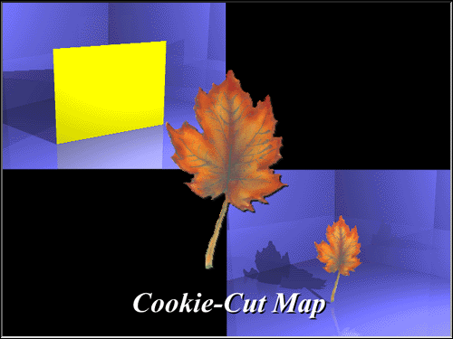

The value determines the amount of color that comes from the image file versus
the objects color (a value of 75 would take 75% of the image map color, and
25% of the underlying model color). This number should range from 1 to 100%.
Value has no effect on the cut out portion of the picture.
If no background color is set for the image map, white will be used to
indicate the cut out portion.

Related Topics:

Transparency Maps
Bump Map
Specularity Map
Diffuse Map
Reflectivity Map
Ambiance Map
Displacement and Fractal Maps